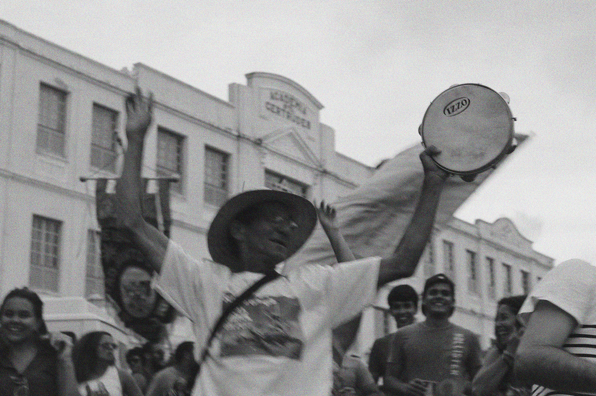
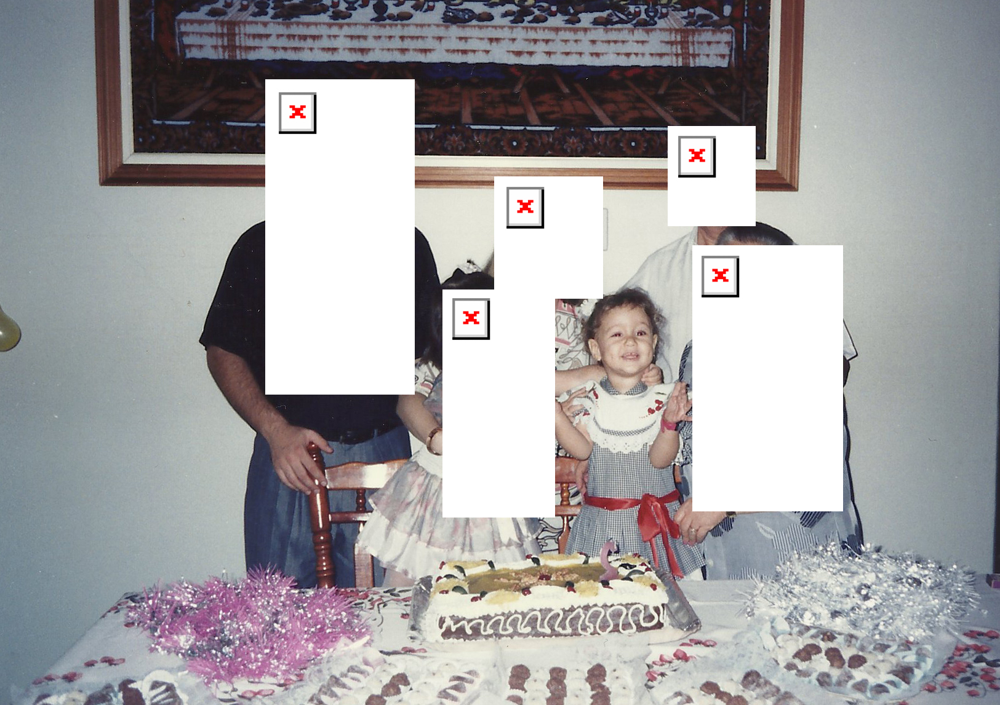

formação
graduada em comunicação social com ênfase em fotografia e cinema pela ufmg, com passagem por pesquisas relacionadas a livro de artista e cinema.
produção - em construção
[2016] reportagem multimídia 'Orisday, Orisnight' conta a história de Oris, um carismático brincante, agente cultural da cidade de Olinda. Para acesso à página, clique aqui.
[2015] a série 'por parte de pai' foi desenvolvida durante a disciplina de ateliê de fotografia II, sob orientação de patrícia azevedo, e foi exposta no espaço F, da escola de belas artes da UFMG.